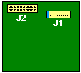

Removing Wash Pick-and-Place
This procedure describes how to remove the wash pick-and-place module.
Perform this procedure when:
- service access to the wash pick-and-place is insufficient.
- it is necessary to gain access to another module.
-
Prepare the instrument.
Caution: It is recommended not to remove the towers (if at all possible) from the baseplate, as this makes it much more difficult to adjust/align the module after installing.
-
If removing the entire assembly, including the tower, then:
- Remove the center gray rear cover, and place it in a location where it is safe from damage.
- Remove the upper rear cover, and place it in a location where it is safe from damage.
- Open the upper right front cover.
- Remove power from the motors by using the switch on the Power Distribution PCB labeled "All DC power (except CPU and reagent coolers)".
-
If removing the entire assembly, including the tower, then:
-
Remove the wash pick-and-place.
-
Remove these connectors from the wash pick-and-place interface PCB:

- J1 - Ribbon Cable
- J2 - Wash P&P Motor
-
Remove the air line from the wash pick-and-place air valve.
Note: Push in on the locking ring and pull out on the tube to remove it from the wash pick-and-place air valve.
- Manually move the pick-and-place carriage to the front of the gantry.
-
Remove the pick-and-place using one of two options: remove the gantry only or remove the gantry and the towers.
- If removing a pick-and-place with a mounting tower (not recommended),
- mark the location of the tower on the instrument base plate using a sharp object or pen.
- remove the four screws holding the tower to the instrument base plate.
- remove the gantry from the instrument with the tower still attached.
- If removing a pick-and-place with a gantry only,
- loosen the two captive screws holding the gantry to the tower.
- Firmly grasp the main bracket assembly with both hands and wiggle it forward off the two locator pins.
Caution: Use care in handling the module. Avoid grasping the assembly by the guide rods or any other fragile area.
- Place the wash pick-and-place on a clean work area with its PCB side upward.
- If removing a pick-and-place with a mounting tower (not recommended),
-
Remove these connectors from the wash pick-and-place interface PCB: